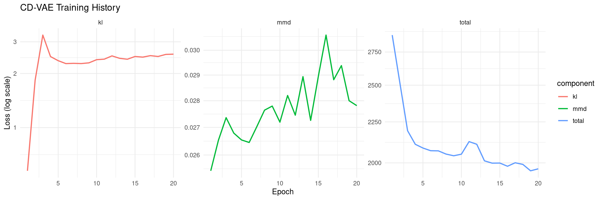
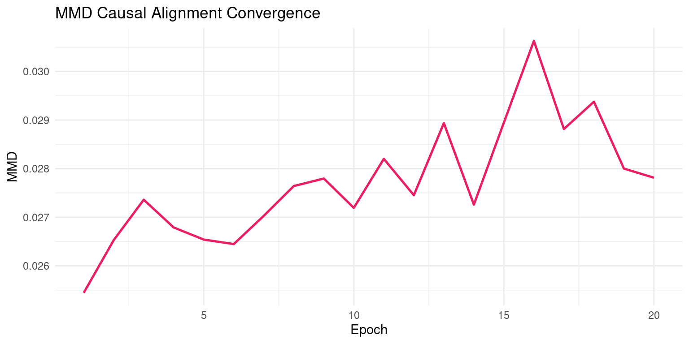
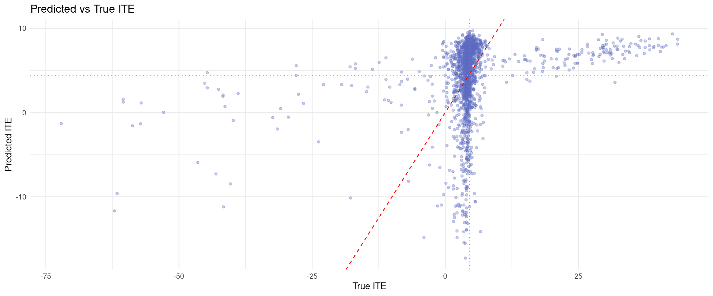
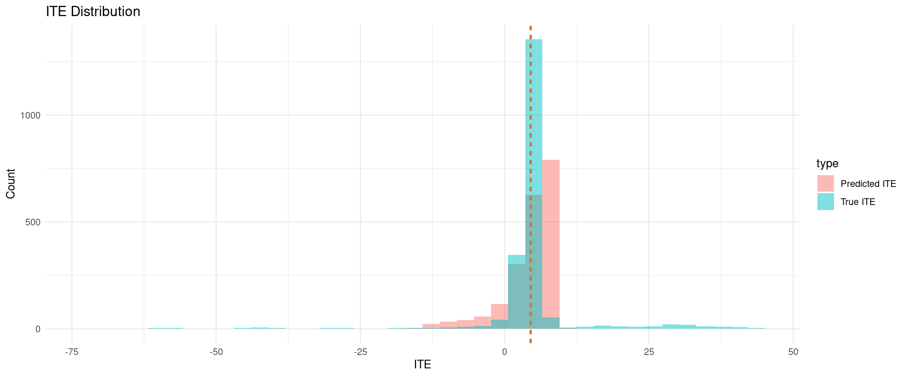
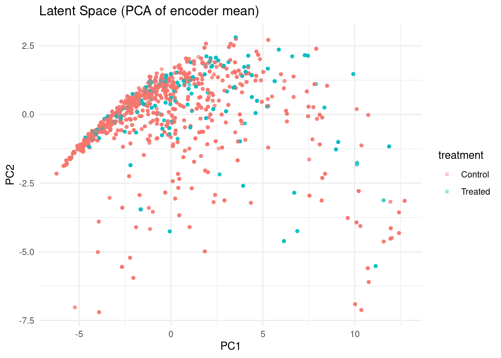

packages <- c(
"tidyverse",
"RCausalML",
"torch",
"causaldata",
"ForCausality",
"mlbench"
)CausalDiscrepancy VAE: Discrepancy-Regularized Causal Representation Learning
CausalDiscrepancyVAE extends a standard VAE objective with an explicit distribution-matching penalty between treatment groups in latent space. The practical goal is to reduce treatment-group imbalance in representation space while preserving predictive structure for outcomes. In this notebook, we convert the complete causalDiscrepanct_VAE.ipynb workflow into R and run it with {RCausalML}’s torch implementation: causal_discrepancy_vae().
Overview
A Variational Autoencoder learns to encode data \(x\) into a latent space \(z\) and reconstruct it, optimizing the Evidence Lower Bound (ELBO):
\[ \mathcal{L}_{\text{ELBO}} = \mathbb{E}_{q_\phi(z|x)}\left[\log p_\theta(x|z)\right] - D_{\text{KL}}\left(q_\phi(z|x) \,\|\, p(z)\right) \]
The first term is the reconstruction loss - how faithfully the decoder recovers \(x\). The second is a regularization term that keeps the approximate posterior \(q_\phi(z|x)\) close to a prior \(p(z)\) (typically a standard Gaussian).
This works well for generative modeling, but it has no notion of causality - it cannot distinguish correlation from intervention.
The Causal Extension: Adding MMD
The CausalDiscrepancy VAE adds a third term to the objective:
\[ \mathcal{L}_{\text{CD-VAE}} = \mathcal{L}_{\text{ELBO}} - \lambda \cdot \text{MMD}\!\left(\hat{p}_{\text{int}},\, p_{\text{int}}\right) \]
where:
- \(\hat{p}_{\text{int}}\) is the model’s predicted distribution under a virtual (simulated) intervention
- \(p_{\text{int}}\) is the real distribution observed under an actual intervention (e.g., from a Perturb-Seq experiment)
- \(\lambda\) controls how strongly this causal alignment is enforced
The model is thus penalized whenever its simulated interventions produce outputs that look different from real experimental interventions.
What is Maximum Mean Discrepancy (MMD)?
MMD is a kernel-based distance between two probability distributions. Given samples from two distributions \(P\) and \(Q\), it measures how different they are by comparing their mean embeddings in a Reproducing Kernel Hilbert Space (RKHS):
\[ \text{MMD}^2(P, Q) = \left\|\, \mathbb{E}_{x \sim P}[\phi(x)] - \mathbb{E}_{y \sim Q}[\phi(y)] \,\right\|^2_{\mathcal{H}} \]
In practice, using the kernel trick with a kernel \(k\) (e.g., RBF / Gaussian), this expands to:
\[ \text{MMD}^2(P, Q) = \mathbb{E}_{x,x' \sim P}[k(x,x')] - 2\,\mathbb{E}_{x \sim P,\, y \sim Q}[k(x,y)] + \mathbb{E}_{y,y' \sim Q}[k(y,y')] \]
Key properties that make it useful here:
| Property | Why it matters |
|---|---|
| Non-parametric | No assumption about the shape of either distribution |
| Differentiable | Can be backpropagated through during training |
| Operates on samples | Works even with finite batches of cells/observations |
| MMD = 0 iff \(P = Q\) | Provides a proper distributional test |
Virtual Interventions in the Latent Space
The “causal” part of the model relies on do-calculus intuition. A virtual intervention \(\text{do}(X_i = v)\) is simulated by:
- Encoding observed (unperturbed) cells into the latent space \(z \sim q_\phi(z|x)\)
- Modifying a specific latent dimension (or a learned intervention subspace) corresponding to gene \(i\) - this is the virtual perturbation
- Decoding the modified \(\tilde{z}\) back into gene expression space to get \(\hat{x}_{\text{int}}\)
This produces a predicted post-intervention distribution \(\hat{p}_{\text{int}}\). The MMD term then checks: does this simulated perturbation actually look like real CRISPR knockout data?
Unperturbed cell x
|
v
Encoder q_phi(z|x)
|
v
Latent code z
|
[modify z_i] <- virtual intervention do(gene_i = v)
|
v
Decoder p_theta(x|z_tilde)
|
v
x_hat_int --> MMD(x_hat_int, x_int_real) <- real CRISPR dataApplication to Perturb-Seq / CRISPR Data
Perturb-Seq combines CRISPR-based genetic perturbations with single-cell RNA sequencing. Each cell has:
- A known gene knockout (the intervention)
- A full transcriptome readout (the outcome)
This creates a dataset with both observational and (partial) interventional structure - exactly what CausalDiscrepancy VAE exploits.
Why standard VAEs fail here
A regular VAE trained on Perturb-Seq data would learn to reconstruct gene expression profiles, but it conflates the statistical pattern of knockouts with genuine causal effects. It cannot answer: “If I knock out gene X in a cell where it was never knocked out, what happens?”
What CD-VAE does differently
- The latent space is structured so that specific dimensions encode causal factors - ideally individual genes or gene programs
- The MMD penalty forces the model’s predicted response to gene \(X\) knockout to match the observed response, for every knockout in the training set
- Generalization then allows predicting the effect of unseen or combinatorial perturbations
Full Training Objective (Expanded)
\[ \mathcal{L} = \underbrace{\mathbb{E}_{q_\phi(z|x)}\left[\log p_\theta(x|z)\right]}_{\text{reconstruction}} - \underbrace{D_{\text{KL}}\left(q_\phi(z|x) \,\|\, p(z)\right)}_{\text{latent regularization}} - \underbrace{\lambda \sum_k \text{MMD}\!\left(\hat{p}_{\text{int}}^{(k)},\, p_{\text{int}}^{(k)}\right)}_{\text{causal discrepancy penalty}} \]
The sum over \(k\) runs over all perturbation conditions present in the training data (e.g., each distinct gene knockout). Each term asks: for perturbation \(k\), does the model’s simulation match reality?
Strengths and Limitations
Strengths
- Leverages real interventional data as a supervisory signal, which most causal VAEs lack
- MMD is computationally tractable even in high dimensions (e.g., ~20,000 genes)
- Naturally handles distributional shift between observational and interventional regimes
- Can generalize to out-of-distribution perturbations if the latent causal structure is well-learned
Limitations
- Requires some real interventional data - it’s not purely observational causal discovery
- Identifying which latent dimensions correspond to which genes is non-trivial; often requires auxiliary supervision or disentanglement constraints
- MMD is sensitive to kernel choice; a poorly chosen kernel may fail to capture biologically relevant distributional differences
- Combinatorial perturbations grow exponentially, so full coverage of the training signal is rarely possible
The core insight is elegant: rather than inferring causal structure purely from observational data (which is notoriously hard), the model uses the discrepancy between its causal predictions and real experimental outcomes as a direct training signal - anchoring the latent space to physical interventions rather than statistical associations alone.
Implementation in R
We use the installed {RCausalML} package implementations of causal_discrepancy_vae() and predict.causal_discrepancy_vae().
Setup
Load and Check Required Libraries
Install Missing Packages
# new_packages <- packages[!(packages %in% installed.packages()[, "Package"])]
# if (length(new_packages)) install.packages(new_packages)Verify Installation
cat("Installed packages:\n")Installed packages:print(sapply(packages, requireNamespace, quietly = TRUE)) tidyverse RCausalML torch causaldata ForCausality mlbench
TRUE TRUE TRUE TRUE TRUE TRUE Load Required Libraries
invisible(lapply(packages, function(pkg) {
suppressPackageStartupMessages(library(pkg, character.only = TRUE))
}))
if (!exists("causal_discrepancy_vae", where = asNamespace("RCausalML"), mode = "function")) {
stop("RCausalML::causal_discrepancy_vae() is not available. Reinstall/update RCausalML.")
}run_fast <- TRUE
device_use <- NULL
if (requireNamespace("torch", quietly = TRUE)) {
device_use <- if (torch::cuda_is_available()) "cuda" else "cpu"
}
set.seed(42)
if (requireNamespace("torch", quietly = TRUE)) torch::torch_manual_seed(42)
# Hyperparameters (mapped from Python tutorial)
LATENT_DIM <- 16L
HIDDEN_DIM <- 128L
BATCH_SIZE <- if (run_fast) 256L else 128L
EPOCHS <- if (run_fast) 20L else 80L
LR <- 1e-3
BETA <- 1.0
LAMBDA_MMD <- 5.0
LAMBDA_Y <- 10.0
N_KERNEL <- 5LFit CausalDiscrepancyVAE on IHDP Dataset
The data loading section follows the same IHDP pipeline style used in the CEVAE notebook, including fallback to synthetic data if remote files are unavailable.
Dataset
base_url <- "https://raw.githubusercontent.com/uber/causalml/master/docs/examples/data"
cols <- c("treatment", "y_factual", "y_cfactual", "mu0", "mu1", paste0("X", 0:24))
df <- NULL
for (i in 1:9) {
url <- sprintf("%s/ihdp_npci_%d.csv", base_url, i)
tmp <- tryCatch({
read.csv(url, header = FALSE)
}, error = function(e) NULL)
if (!is.null(tmp) && nrow(tmp) > 0) {
colnames(tmp) <- cols[seq_len(ncol(tmp))]
if (is.null(df)) df <- tmp else df <- rbind(df, tmp)
}
}
if (!is.null(df) && nrow(df) > 0) {
replications <- if (run_fast) 2L else 10L
df <- do.call(rbind, replicate(replications, df, simplify = FALSE))
message("Loaded IHDP (all 9 files × ", replications, " replications): ", nrow(df), " × ", ncol(df))
} else {
df <- NULL
}Loaded IHDP (all 9 files × 2 replications): 13446 × 30if (is.null(df) || nrow(df) == 0) {
d <- tryCatch(
synthetic_data(mode = 1, n = 5000, p = 25, sigma = 1.0, adj = 0),
error = function(e) synthetic_data(mode = 1, n = 5000, p = 25, sigma = 1.0)
)
df <- as.data.frame(d$X)
colnames(df) <- paste0("X", 0:(ncol(df) - 1))
df$treatment <- d$w
df$y_factual <- d$y
df$y_cfactual <- ifelse(d$w == 1, d$b - 0.5 * d$tau, d$b + 0.5 * d$tau)
df$mu0 <- d$b - 0.5 * d$tau
df$mu1 <- d$b + 0.5 * d$tau
message("Using synthetic fallback: ", nrow(df), " × ", ncol(df))
}
# Feature order: binary first (Python indices 6-24 -> R columns 7-25), then continuous (0-5 -> 1-6)
binfeats <- 7:25
contfeats <- 1:6
perm <- c(binfeats, contfeats)
xcols <- paste0("X", 0:24)
X <- as.matrix(df[, xcols][, perm])
treatment <- as.integer(df$treatment)
y <- as.numeric(df$y_factual)
y_cf <- as.numeric(df$y_cfactual)
mu0 <- as.numeric(df$mu0)
mu1 <- as.numeric(df$mu1)
tau <- ifelse(df$treatment == 1, df$y_factual - df$y_cfactual, df$y_cfactual - df$y_factual)
# Train/validation split (80/20, random_state=1 like Python)
n <- nrow(X)
set.seed(1)
ite <- sample(n, size = round(0.2 * n))
itr <- setdiff(seq_len(n), ite)
X_train <- X[itr, ]
treatment_train <- treatment[itr]
y_train <- y[itr]
tau_train <- tau[itr]
mu_0_train <- mu0[itr]
mu_1_train <- mu1[itr]
X_val <- X[ite, ]
treatment_val <- treatment[ite]
y_val <- y[ite]
tau_val <- tau[ite]
mu_0_val <- mu0[ite]
mu_1_val <- mu1[ite]
cat("Train size:", length(itr), "| Val size:", length(ite), "\n")Train size: 10757 | Val size: 2689 Helper Function Conversions
preprocess_features <- function(train_x, test_x) {
# Standardize continuous x1-x6; keep binary x7-x25 unchanged
scaled_train <- train_x
scaled_test <- test_x
means <- colMeans(train_x[, 20:25, drop = FALSE])
sds <- apply(train_x[, 20:25, drop = FALSE], 2, sd)
sds[sds == 0] <- 1
scaled_train[, 20:25] <- scale(train_x[, 20:25, drop = FALSE], center = means, scale = sds)
scaled_test[, 20:25] <- scale(test_x[, 20:25, drop = FALSE], center = means, scale = sds)
list(train_x = scaled_train, test_x = scaled_test, means = means, sds = sds)
}
build_training_arrays <- function(x, t, y, subsample = 5000L, seed = 42L) {
set.seed(seed)
idx <- sample.int(nrow(x), size = min(subsample, nrow(x)), replace = FALSE)
list(
x = x[idx, , drop = FALSE],
t = as.numeric(t[idx]),
y = as.numeric(y[idx]),
idx = idx
)
}
estimate_ate_cdvae <- function(model, x_eval, mu0_true, mu1_true) {
y0_hat <- predict(model, x_eval, type = "mu0")
y1_hat <- predict(model, x_eval, type = "mu1")
ite_hat <- y1_hat - y0_hat
ite_true <- mu1_true - mu0_true
ate_pred <- mean(ite_hat)
ate_true <- mean(ite_true)
pehe <- sqrt(mean((ite_hat - ite_true)^2))
list(
ite_hat = ite_hat,
ite_true = ite_true,
ate_pred = ate_pred,
ate_true = ate_true,
ate_error = abs(ate_true - ate_pred),
pehe = pehe
)
}
plot_training_history_cdvae <- function(history) {
h <- dplyr::bind_rows(lapply(seq_along(history$train), function(i) {
as.data.frame(history$train[[i]]) |>
dplyr::mutate(epoch = i)
}))
h_long <- tidyr::pivot_longer(h, cols = c(total, kl, mmd), names_to = "component", values_to = "value")
ggplot(h_long, aes(epoch, value, color = component)) +
geom_line(linewidth = 0.8) +
scale_y_log10() +
facet_wrap(~component, scales = "free_y", nrow = 1) +
labs(
title = "CD-VAE Training History",
x = "Epoch",
y = "Loss (log scale)"
) +
theme_minimal()
}
plot_latent_space_cdvae <- function(model, x_data, t_data) {
z_mu <- predict(model, x_data, type = "latent")
pc <- prcomp(z_mu, center = TRUE, scale. = TRUE)
z2 <- pc$x[, 1:2, drop = FALSE]
dfz <- data.frame(
PC1 = z2[, 1],
PC2 = z2[, 2],
treatment = factor(t_data, levels = c(0, 1), labels = c("Control", "Treated"))
)
ggplot(dfz, aes(PC1, PC2, color = treatment)) +
geom_point(alpha = 0.35, size = 1.2) +
labs(
title = "Latent Space (PCA of encoder mean)",
x = "PC1",
y = "PC2"
) +
theme_minimal()
}
plot_ite_analysis_cdvae <- function(ite_hat, ite_true, ate_pred, ate_true) {
df <- data.frame(ite_true = ite_true, ite_hat = ite_hat)
p1 <- ggplot(df, aes(ite_true, ite_hat)) +
geom_point(alpha = 0.35, size = 1.2, color = "#5C6BC0") +
geom_abline(slope = 1, intercept = 0, linetype = "dashed", color = "red") +
geom_hline(yintercept = ate_pred, linetype = "dotted", color = "#FF9800") +
geom_vline(xintercept = ate_true, linetype = "dotted", color = "#4CAF50") +
labs(title = "Predicted vs True ITE", x = "True ITE", y = "Predicted ITE") +
theme_minimal()
dfh <- dplyr::bind_rows(
data.frame(value = ite_true, type = "True ITE"),
data.frame(value = ite_hat, type = "Predicted ITE")
)
p2 <- ggplot(dfh, aes(value, fill = type)) +
geom_histogram(position = "identity", alpha = 0.5, bins = 40) +
geom_vline(xintercept = ate_true, linetype = "dashed", color = "#4CAF50") +
geom_vline(xintercept = ate_pred, linetype = "dashed", color = "#FF5722") +
labs(title = "ITE Distribution", x = "ITE", y = "Count") +
theme_minimal()
list(scatter = p1, hist = p2)
}
plot_mmd_convergence_cdvae <- function(history) {
h <- dplyr::bind_rows(lapply(seq_along(history$train), function(i) {
as.data.frame(history$train[[i]]) |>
dplyr::mutate(epoch = i)
}))
ggplot(h, aes(epoch, mmd)) +
geom_line(color = "#E91E63", linewidth = 0.9) +
labs(title = "MMD Causal Alignment Convergence", x = "Epoch", y = "MMD") +
theme_minimal()
}Feature Scaling and Subsampling
proc <- preprocess_features(X_train, X_val)
X_train_scaled <- proc$train_x
X_val_scaled <- proc$test_x
sub_train <- build_training_arrays(
x = X_train_scaled,
t = treatment_train,
y = y_train,
subsample = if (run_fast) 5000L else nrow(X_train_scaled),
seed = 42L
)
sub_val <- build_training_arrays(
x = X_val_scaled,
t = treatment_val,
y = y_val,
subsample = if (run_fast) 2000L else nrow(X_val_scaled),
seed = 42L
)
X_train_cd <- sub_train$x
treatment_train_cd <- sub_train$t
y_train_cd <- sub_train$y
X_val_cd <- sub_val$x
cat("Train covariate matrix shape:", paste(dim(X_train_cd), collapse = " × "), "\n")Train covariate matrix shape: 5000 × 25 cat("Validation covariate matrix shape:", paste(dim(X_val_cd), collapse = " × "), "\n")Validation covariate matrix shape: 2000 × 25 Fit CausalDiscrepancyVAE Model
cdvae <- RCausalML::causal_discrepancy_vae(
X = X_train_cd,
treatment = treatment_train_cd,
y = y_train_cd,
latent_dim = LATENT_DIM,
hidden_dim = HIDDEN_DIM,
beta = BETA,
lambda_mmd = LAMBDA_MMD,
lambda_y = LAMBDA_Y,
n_kernels = N_KERNEL,
num_epochs = as.integer(EPOCHS),
batch_size = as.integer(BATCH_SIZE),
learning_rate = LR,
weight_decay = 1e-4,
verbose = !run_fast,
device = device_use
)
history <- cdvae$history
cat("CD-VAE model fitted.\n")CD-VAE model fitted.cat("Latent dimension:", cdvae$latent_dim, "\n")Latent dimension: 16 Training Diagnostics
plot_training_history_cdvae(history)
plot_mmd_convergence_cdvae(history)
ATE and ITE Evaluation
eval_idx <- sub_val$idx
ate_eval <- estimate_ate_cdvae(
model = cdvae,
x_eval = X_val_scaled[eval_idx, , drop = FALSE],
mu0_true = mu_0_val[eval_idx],
mu1_true = mu_1_val[eval_idx]
)
cat("ATE Estimation\n")ATE Estimationcat(" True ATE :", round(ate_eval$ate_true, 4), "\n") True ATE : 4.6004 cat(" Pred ATE :", round(ate_eval$ate_pred, 4), "\n") Pred ATE : 4.4141 cat(" ATE Error:", round(ate_eval$ate_error, 4), "\n") ATE Error: 0.1863 cat(" sqrt(PEHE):", round(ate_eval$pehe, 4), "\n") sqrt(PEHE): 8.9919 plots_ite <- plot_ite_analysis_cdvae(
ite_hat = ate_eval$ite_hat,
ite_true = ate_eval$ite_true,
ate_pred = ate_eval$ate_pred,
ate_true = ate_eval$ate_true
)
plots_ite$scatter
plots_ite$hist
Latent Space Visualization
plot_latent_space_cdvae(
model = cdvae,
x_data = X_train_cd,
t_data = treatment_train_cd
)
Final Training Summary
last_train <- history$train[[length(history$train)]]
cat("\n", strrep("=", 60), "\n", sep = "")
============================================================cat("CD-VAE Training Complete\n")CD-VAE Training Completecat(strrep("=", 60), "\n", sep = "")============================================================cat("Final train loss:", round(last_train$total, 4), "\n")Final train loss: 1966.196 cat("Final recon :", round(last_train$recon, 4), "\n")Final recon : 0.2833 cat("Final KL :", round(last_train$kl, 4), "\n")Final KL : 2.5617 cat("Final MMD :", round(last_train$mmd, 6), "\n")Final MMD : 0.027813 cat("Final y loss :", round(last_train$y, 4), "\n")Final y loss : 196.3211 cat("True ATE :", round(ate_eval$ate_true, 4), "\n")True ATE : 4.6004 cat("Pred ATE :", round(ate_eval$ate_pred, 4), "\n")Pred ATE : 4.4141 cat("ATE Error :", round(ate_eval$ate_error, 4), "\n")ATE Error : 0.1863 cat(strrep("=", 60), "\n", sep = "")============================================================Summary and Conclusions
CausalDiscrepancyVAE is a practical bridge between deep latent-variable modeling and causal effect estimation under covariate imbalance. In this R conversion, we preserved the full Python workflow design while delegating model internals to {RCausalML}’s torch implementation for package-safe training and prediction.
- The notebook follows the same end-to-end stages as the original Python tutorial: IHDP loading, preprocessing, training, evaluation, and visualization.
- All key Python helper functions were converted into R utilities (
preprocess_features,build_training_arrays,estimate_ate_cdvae, and diagnostics plotting functions). - Model fitting uses
causal_discrepancy_vae()with explicit control overbeta,lambda_mmd,lambda_y, and latent architecture. - Evaluation reports ATE error and PEHE from known potential outcomes and adds latent-space and MMD convergence diagnostics.